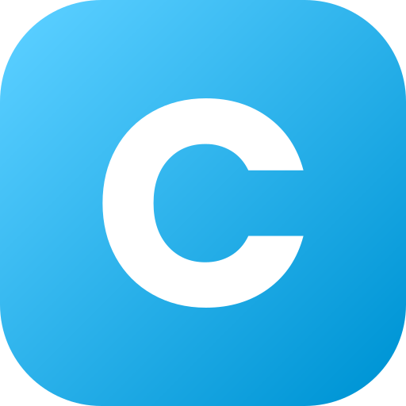
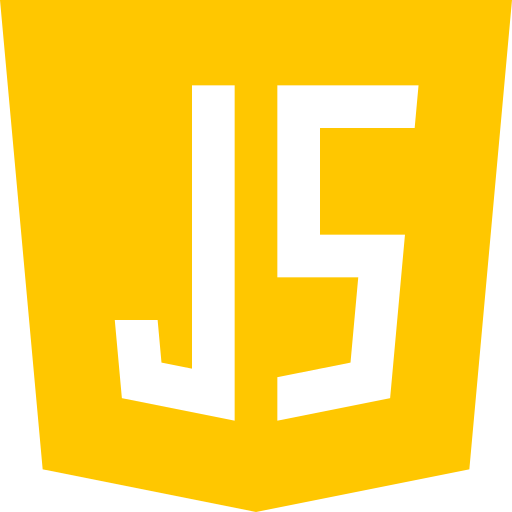

Seja bem vindo(a) ao meu portfólio Profissional!
Olá! me chamo Mariana Marques
Desenvolvedor de Sistemas
Sou apaixonada por transformar ideias em soluções digitais inovadoras. Com experiência em tecnologias como VsCode, Git e MySql, crio aplicações eficientes que fazem a diferença. Meu compromisso é com a excelência e a inovação, sempre buscando desafios que me permitam crescer profissionalmente.


Sobre Mim
Sou Mariana, uma desenvolvedora de sistemas apaixonada por transformar ideias em realidade digital. Desde cedo, a tecnologia me fascinou, e hoje dedico meu tempo a criar soluções inovadoras que fazem a diferença. Com uma experiência em algumas tecnologias e linguagens de programação, adoro enfrentar novos desafios que me permitam crescer e aprender. Quando não estou codificando, você pode me encontrar explorando novas receitas ou novos projetos, sempre em busca de novas inspirações. Estou animada para colaborar em projetos que tenham um impacto positivo e significativo!
Entre em contato

Mariana Marques

@xmarimarques

(41) 9 9750-4019

xmarimarques

Mariana Hipolito
Formações
Técnico em Desenvolvimento de Sistemas
SENAI
05/08/2022 - 13/12/2023


Análise e Desenvolvimento de Sistemas
PUCPR
05/02/2024 - Cursando
Linguagens

Python

C

Java

SQL

JavaScript

PHP
Experiências

Jovem Aprendiz em
Soluções Digitais
Robert Bosch
05/02/2024 - 05/07/2025
Habilidades

Comunicação

Criatividade
Trabalho em Equipe
